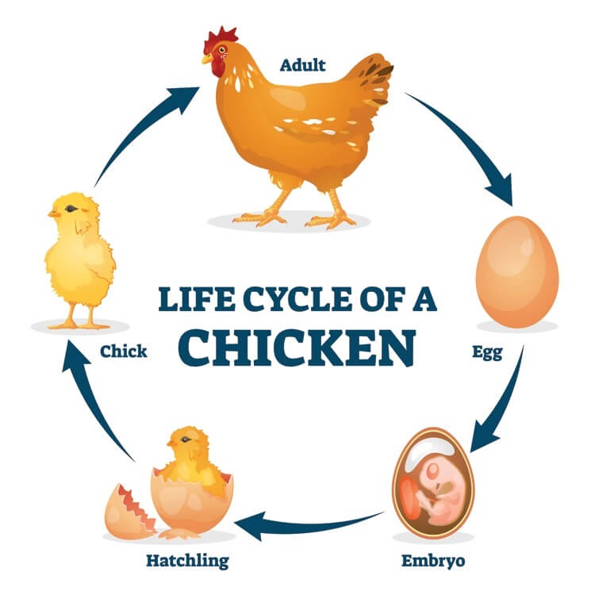

The chart gives the highlights of each day's development of the poultery chick.
Day 1: Development of the germinal disk begins.
Day 2: Tissue development starts as well as blood circulation.
Day 3: Heart starts to beat and blood vessels are visible.
Day 4: Amniotic sac starts to develop.
Day 5: Elbows and knees develop and their eyes are visible whilst candling.
Day 6: Beak starts to form and voluntary movement starts.
Day 7: Comb begins to grow.
Day 8: Feather follicles start to appear and ear canals open.
Day 9: Claws begin to develop and embryo now looks bird-like.
Day 10: Egg teeth and claws are formed.
Day 11: Tail feathers start growing.
Day 12: Feathers starting to appear.
Day 13: Leg scales start to appear and they have light covering of feathers over their body.
Day 14: Head turns to pipping position.
Day 15: Chick will consume egg white.
Day 16: They are now completely feathered.
Day 17: Egg white is now absorbed and their head is between their legs.
Day 18: They are almost fully grown now. Yolk sac still outside the body and their right wing. If your eggs are in the incubator this is lockdown day.
Day 19: Yolk sac moving into the body and embryo now occupies all the space except the air cell.
Day 20: The yolk sac is absorbed and the umbilicus now closed. Embryo starts to breathe air and becomes a chick. This is where the pipping starts!
Day 21: Also known as hatch day. Hatching is usually accomplished within eighteen hours but can drag on a little.
